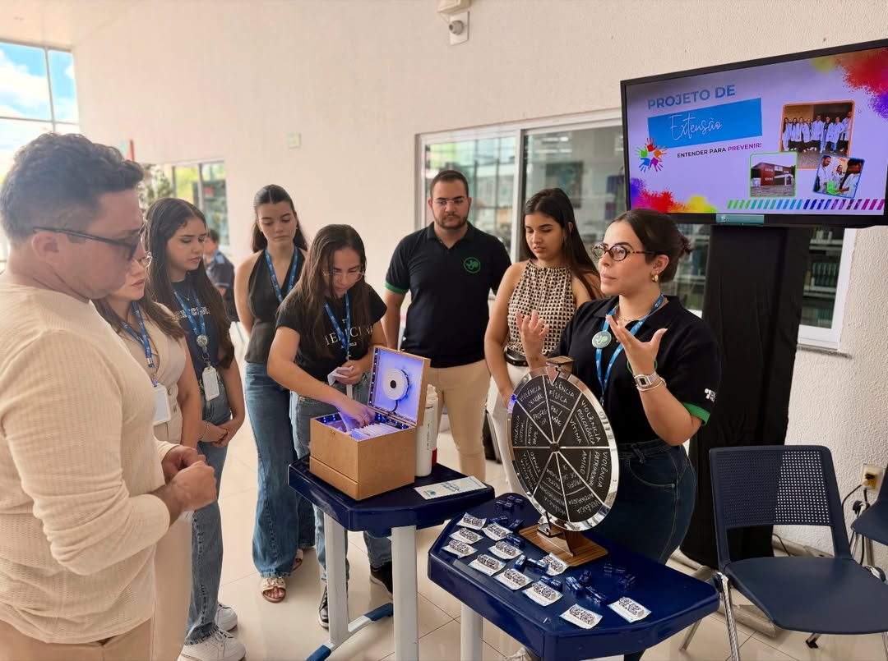
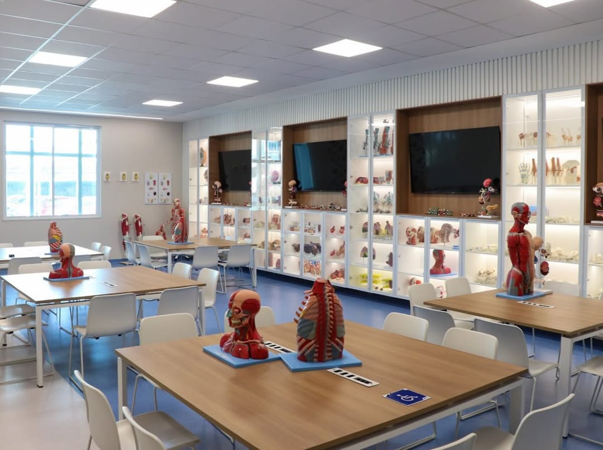
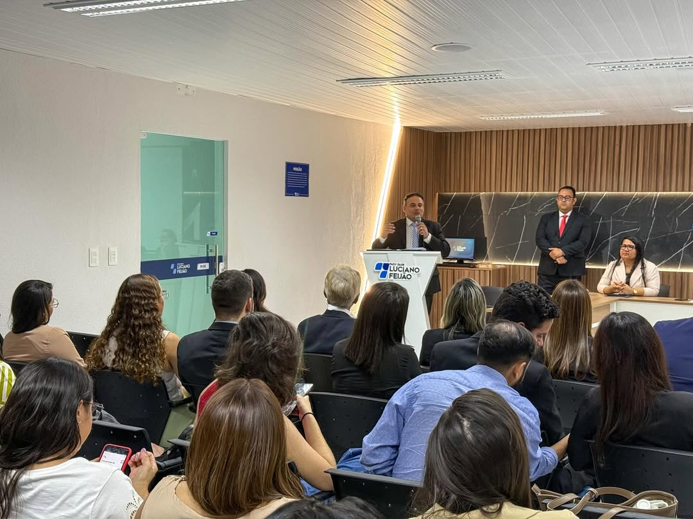
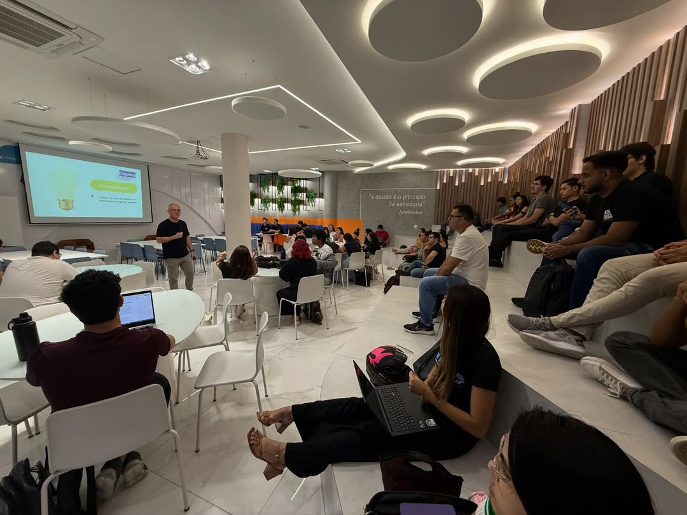

A Faculdade Luciano Feijão abre as portas para o semestre 2026.2. Cursos de graduação, pós-graduação e EaD com qualidade reconhecida pelo MEC.
Reconhecida como 1º lugar em qualidade de ensino em Sobral, a FLF oferece mais do que formação — oferece uma trajetória.
Avaliação de excelência que garante o reconhecimento do seu diploma em todo o território nacional.
Cursos presenciais e EaD nas áreas de Direito, Administração, Psicologia e muito mais.
Núcleo de Prática Jurídica, laboratórios e projetos de extensão que conectam teoria e mercado de trabalho.
Financiamento estudantil para que nenhum estudante fique sem a oportunidade de se graduar.
Momentos capturados na FLF — campus, eventos e a vida acadêmica que espera por você no semestre 2026.2.




Assista ao vídeo institucional e veja como é estudar na faculdade que forma grandes profissionais há mais de duas décadas.
Não perca a oportunidade. Faça sua pré-inscrição agora mesmo.
Fazer pré-inscrição →